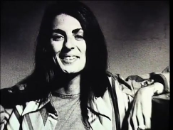

Christine Chubbuck
Written by Cass Python, 2017-02-06Christine Chubbuck was born on the 24th of August 1944 in Hudson, Ohio. She was the daughter of Margaretha D. "Peg" (1921-1994) and George Fairbanks Chubbuck (1918-2015). She had two brothers, Greg and Tim. Chubbuck attended the Laurel School for Girls in Shaker Heights, a suburb of Cleveland.
She originally worked at WXLT-TV (now WWSB) as an evening news reporter and then later she went on to host a morning community affairs talk show, Suncoast Digest. 
In the lead-up to her death, she had volunteered to make a feature on suicide for the station, for her research on the subject, she had asked a bobby who the best way of taking your own life was (the sheriff told her what kind of gun and bullets that he would use if ever put in that situation).
On the 15th of July 1974, 29-year-old Christine had come, equipped with a gun, to end it all. Chubbuck (who was noticeably more enthusiastic and cheerful than usual) declared, just before Suncoast Digest was due to go on air, that she needed to read a newscast beforehand, confusing co-workers (as this was something she had never done before).
Everything went fine for eight minutes, she covered three national stories. When she got to the fourth story, a shooting at a local restaurant, the reel for the footage jammed, prompting her to shrug, nonchalantly turn towards the camera and proclaim the now infamous line;
In keeping with the WXLT practice of presenting the most immediate and complete reports of local blood and guts news, TV 40 presents what is believed to be a television first. In living colour, an exclusive coverage of an attempted suicide
She then drew a revolver that she had hidden in her bag, placed it behind her right ear and fired, immediately slumping forward violently onto her desk, as the technical director scrambled to fade rapidly to black.
The Footage
This was 1974, not where everything is recorded, only rich or lucky people could afford a video cassette recorder in the 70's, it is possible that someone recorded the suicide, but it is unlikely. If someone did record the suicide, it is likely that the video is now damaged because of time, or the owner does not want to release the tape.
A significant number of people have claimed to have seen the footage via a number of sources other than the original live broadcast, including early websites (nope), FBI training videos (nope), and mondo films a la Faces of Death (nope), this seems unlikely as to why did no one archive the video.
One of the most likely people to have a copy of the video will be WXLT-TV and as it seems, they do indeed have a copy. According to an article published by Vulture, Mollie Nelson, the widow of the owner of Chubbuck's news station, has a copy, the article says that;
[Vulture] got a call that confirms the tape's existence. [...] [Mollie Nelson]
called us [...] to explain that she had the video for years - her late husband
Robert Nelson had kept a copy of the tape, though Mollie says he never told her why.
The article continues by saying after the Sundance debut of "Kate Plays Christine" in which a former news station employee suggests that Nelson might have the tape, people started contacting her, all the attempts made her uncomfortable, she gave the tape to an unnamed "very large law firm"
The article ends by telling us that Mollie Nelson has no plans to release the tape.
The Footage has Been Found?
No - the footage has not been found. In 2017 there was a video published by NationSquid that showed the on-air suicide. The video, "Freaky 5 - Lost Footage" (7:28), seems to show Chubbuck killing herself, many people, including myself, were unsure if the footage was legit. I can safely say that it is most likely fake.
Many people online have picked the footage apart, one big tell tail is the lettering on the desk. itwbtc16 on NationSquid forum said this about it;
As we can see in the crime scene photo, there is a sun-like circle which is
placed behind the 'N' right at the start of the word. However, straight off
the bat, if we look at the exact placement of the 'N' in relation to the
circle, we see that in the crime scene photo, the 'N' is located more towards
the top-right of the circle, leaving more of the circle visible beneath the
'N' than above it, whereas in the footage, the 'N' appears to aligned perfectly
central with the circle, with an equal amount of the circle visible both above
the 'N' and beneath it. The circle itself also appears to be ever so slightly
larger in the footage than in the crime scene photo.
The biggest standout inconsistencies for me in terms of visuals lie in the
'NEWSWATCH' sign which we see on the front of the desk. Whilst the font is
pretty spot on, there are some very minor inaccuracies.
See the rest of itwbtc16's post
Meanwhile, on the Lost Media Wiki, user dycaite posted on the notice board this message about the footage;
Hey guys, dycaite here.
So, as a lot of you are probably aware (from either the forums, the shoutbox or the Discord), there has been a lot of buzz recently about a supposed leak of the Christine Chubbuck tape that turned up in a Top 5 video on YouTube (the video in question can be found here). I avoided reporting on this in any official manner until such a time as some concrete proof of either its legitimacy or, more likely, it's illegitimacy had come to light (unlike some so-called "news" outlets, who practically touted it as hard fact), but I can now confirm that the clip is indeed a fake, nothing more than a well done re-enactment.
The clip was confirmed fake a couple of days back by Gordon Galbraith, news director of WXLT at the time, who posted a Facebook message outlining the reasons for the tape being fake, a screenshot of which can be found here.
Randy has also done a short V-Log on the tape and its newly proven illegitimacy, which can be seen above.
So, that's that; case closed. This leaves us with the conclusion that the clip was faked purely for publicity reasons and while I don't necessarily want to incite condemnation of NationSquid, I think most of you would agree that it's a pretty unsavoury thing to have done; here's hoping he finally does the right thing and comes clean about it now instead of carrying on the charade.
Take it easy guys.
{kind=link}
So yeah, it's fake.
References
I. The Christine Chubbuck Tape (Lost On-Air Suicide Footage; 1974) - The Lost Media Wiki http://lostmediawiki.com/The_Christine_Chubbuck_Tape_(Lost_On-Air_Suicide_Footage;_1974) [Internet Archive, archive.is]
II. Christine Chubbuck - Wikipedia https://en.wikipedia.org/wiki/Christine_Chubbuck [Internet Archive, archive.is]
The Existence of Christine Chubbuck's Suicide Video Has Been Confirmed - Vulture http://vulture.com/2016/06/christine-chubbuck-suicide-video-exists.html [Internet Archive, archive.is]
Photo of Chubbuck https://flickr.com/photos/104052367@N03/10060852375/ - URL can't be saved for some reason
Written by Cass Python, 06/02/17.
http://owlman.neocities.org/library/chubbuck.html https://web.archive.org/web/*/https://owlman.neocities.org/library/chubbuck.html